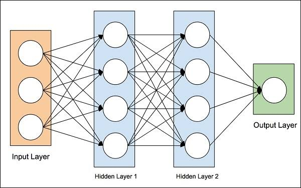

VISUALISATION OF ARTIFICIAL NEURAL NETWORKS
Neural Networks
In biological order neural network are an interconnected web of neurons transmitting elaborate patterns of electrical signals. Dendrites receive input
signals and, based on those inputs, fire an output signal via an axon. Or something like that.
The most common application of neural networks in computing today is to perform one of these easy-for-a-human, difficult-for-a-machine tasks, often referred to as
pattern recognition. Applications range from optical character recognition (turning printed or handwritten scans into digital text) to facial recognition.
A neural network is a connectionist computational system. The computational systems we write are procedural; a program starts at the first line of code, executes it,
and goes on to the next,following instructions in a linear fashion. A true neural network does not follow a linear path. Rather, information is processed collectively,
in parallel throughout a network of nodes (the nodes, in this case, being neurons).

Fig 1: Neural Networks.
Here we have example of acomplex system.The individual elements of the network, the neurons, are simple. They read an input, process it, and generate an output. A network of many
neurons, however, can exhibit incredibly rich and intelligent behaviors. One of the key elements of a neural network is its ability to learn. A neural network is not just a complex
system, but a complex adaptive system, meaning it can change its internal structure based on the information flowing through it. Typically, this is achieved through the
adjusting of weights. In the diagram above, each line represents a connection between two neurons and indicates the pathway for the flow of information. Each connection has a
weight, a number that controls the signal between the two neurons. If the network generates a good output there is no need to adjust the weights. However,
if the network generates a poor output an error, so to speak then the system adapts, altering the weights in order to improve subsequent results.
There are several strategies for learning they are:
-
Supervised Learning:Essentially, a strategy that involves a teacher that is smarter than the network itself. For example, lets take the facial recognition example. The teacher shows the network a bunch of faces, and the teacher already knows the name associated with each face. The network makes its guesses, then the teacher provides the network with the answers. The network can then compare its answers to the known correct ones and make adjustments according to its errors.
-
Unsupervised Learning:Required when there isnt an example data set with known answers. Imagine searching for a hidden pattern in a data set. An application of this is clustering, i.e. dividing a set of elements into groups according to some unknown pattern.
-
Reinforcement Learning:A strategy built on observation. Think of a little mouse running through a maze. If it turns left, it gets a piece of cheese; if it turns right, it receives a little shock. (Dont worry, this is just a pretend mouse.) Presumably, the mouse will learn over time to turn left. Its neural network makes a decision with an outcome (turn left or right) and observes its environment (yum or ouch). If the observation is negative, the network can adjust its weights in order to make a different decision the next time